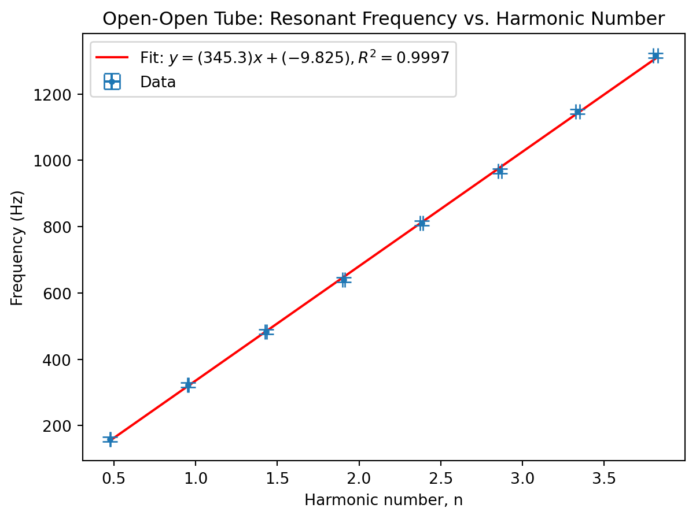
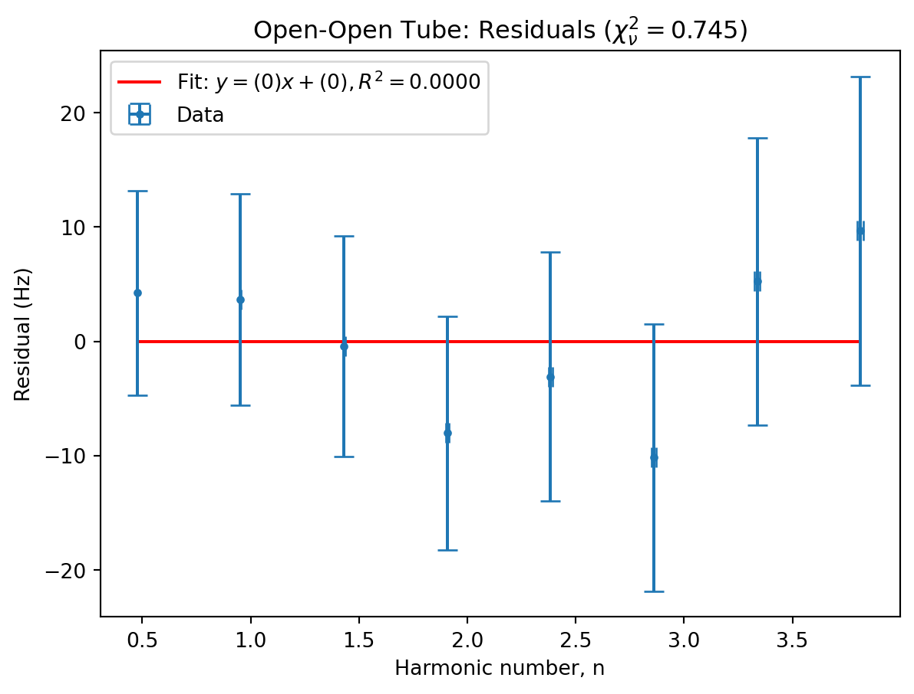
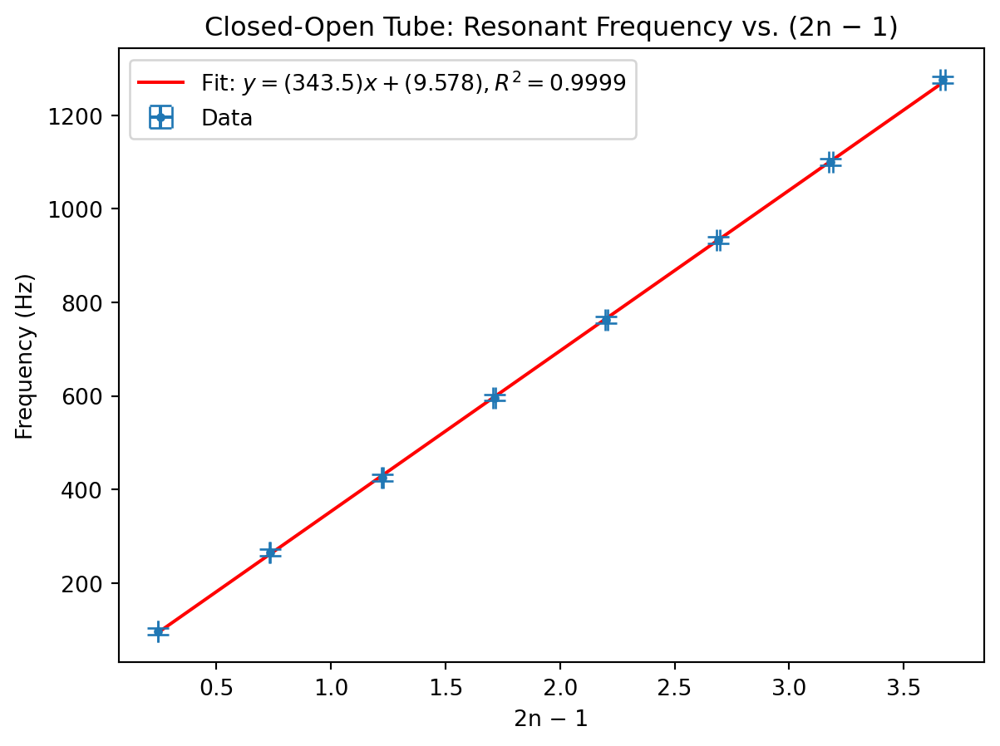
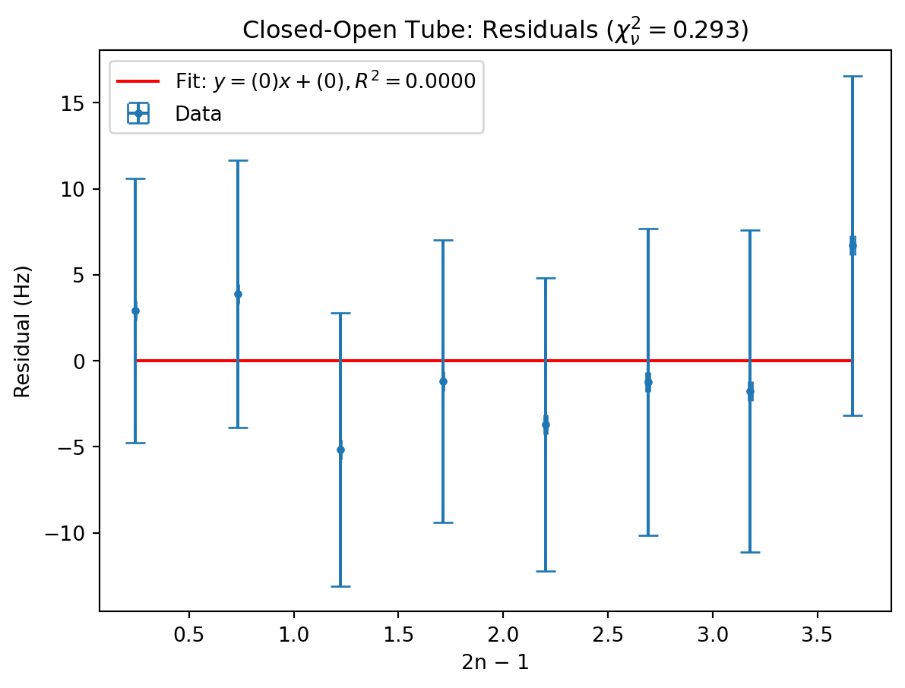

import warnings
from math import pi, sqrt, log
import matplotlib.pyplot as plt
import numpy as np
from scipy import constants, odr
from uncertainties import UFloat, ufloat, umath
warnings.filterwarnings("ignore", category=FutureWarning, module="uncertainties")
warnings.filterwarnings(
"ignore",
category=FutureWarning,
message=r"AffineScalarFunc\.__abs__\(\) is deprecated",
)
warnings.filterwarnings(
"ignore", category=UserWarning, message="Using UFloat objects with std_dev==0"
)
def fit_odr(x: list[UFloat], y: list[UFloat], zero_intercept: bool = False):
x_nom, x_err = [v.n for v in x], [v.s for v in x]
y_nom, y_err = [v.n for v in y], [v.s for v in y]
data = odr.RealData(x_nom, y_nom, sx=x_err, sy=y_err)
if zero_intercept:
model, beta0 = odr.Model(lambda p, x: p[0] * x), [1]
else:
model, beta0 = odr.Model(lambda p, x: p[0] * x + p[1]), [1, 0]
out = odr.ODR(data, model, beta0=beta0).run()
slope = ufloat(out.beta[0], out.sd_beta[0])
intercept = (
ufloat(out.beta[1], out.sd_beta[1]) if not zero_intercept else ufloat(0, 0)
)
y_pred = model.fcn(out.beta, np.array(x_nom))
ss_res = np.sum((np.array(y_nom) - y_pred) ** 2)
ss_tot = np.sum(
np.array(y_nom) ** 2
if zero_intercept
else (np.array(y_nom) - np.mean(y_nom)) ** 2
)
r_squared = 1 - ss_res / ss_tot
return slope, intercept, r_squared
def compsigma(a, b):
return abs((a.n - b.n) / ((((a.s**2) + (b.s**2)) ** (1 / 2))))
def plot(
x,
y,
fitodr=None,
title="default title",
xlabel="default xlabel",
ylabel="default ylabel",
show=True,
):
if fitodr is None:
fitodr = fit_odr(x, y)
slope, intercept, r_squared = fitodr
plt.figure()
first = x[0].n
last = x[-1].n
plt.plot(
[first, last],
[first * slope.n + intercept.n, last * slope.n + intercept.n],
"r-",
label=f"Fit: $y = ({slope.n:.4g})x + ({intercept.n:.4g}),R^2 = {r_squared:.4f}$",
)
plt.errorbar(
[v.nominal_value for v in x],
[v.nominal_value for v in y],
xerr=[v.std_dev for v in x],
yerr=[v.std_dev for v in y],
capsize=5,
linestyle="none",
marker="o",
markersize=3,
label="Data",
)
plt.title(title)
plt.xlabel(xlabel)
plt.ylabel(ylabel)
plt.legend()
if show:
plt.show()
def plot_residuals(
x,
y,
fitodr=None,
title="Residuals",
xlabel="default xlabel",
ylabel="Residual (y - fit)",
show=True,
):
if fitodr is None:
fitodr = fit_odr(x, y)
slope, intercept, r_squared = fitodr
residuals = [yi - (slope * xi + intercept) for xi, yi in zip(x, y)]
sigma_eff = [
sqrt(yi.std_dev**2 + (slope.n * xi.std_dev) ** 2) for xi, yi in zip(x, y)
]
chi2 = sum((r.nominal_value**2) / (s**2) for r, s in zip(residuals, sigma_eff))
dof = len(y) - 1
chi2_reduced = chi2 / dof
zero_fit = (
ufloat(0, 0),
ufloat(0, 0),
0.0,
) # was None — plot()'s label needs a float
plot(
x,
residuals,
fitodr=zero_fit,
title=f"{title} ($\\chi^2_\\nu = {chi2_reduced:.3f}$)",
xlabel=xlabel,
ylabel=ylabel,
show=show,
)
return chi2_reducedBryce Tabangcura - Lab Week 2
Lab partner: haven bunter-gooley
Preamble
The entire experiment, and all data has been done and interpolated in python, so to start with lets start with the preamble python, this being imports and helper functions. I have 4 helper functions, one to fit a linear fit, one to compare sigma between two values, another to plot and another to plot residuals. the imports and warning stuff can be mostly ignored.
Experiment 1
Acoustic experiment.
Aim
To investigate the connection between resonance frequencies to find the speed of sound, and to also use this to determine quality factor of an arbitrary pvc tube.
Method
Extremely simple, first we set up the pvc pipe exactly to spec, taping the connection between the two pvc pipes twice as to make sure there won’t be an issue with a pressure antinode forced in the middle.
First we measured the equipment, which is the length and radius of the pvc pipe.
Firstly we did our experiment with an open end. We took a stand and secured the pvc pipe horizontally across a table. Then with the same stand we placed a mic in a position such that it sits at the general end of the pvc pipe.
We then clapped, tapped the end of the pipe and played a large intensity of white noise through our phones on the other side of the pipe, opposite of where the microphone was. Attempting this, we very clearly saw a discrepancy between the data in our clap and pipe compared to our white noise. So we discarded our white noise results. We recorded the results of the experiment in audacity.
We then repeated the same thing, but instead using the close end cap with a microphone sized hole, and used the same noises and came to the same conclusion of the white noise.
For the third experiment, we recorded an open end clap, then we recorded plot spectrums of with dt’s of 15ms, This was trivially easy to complete, as we just reused the same setup as the first experiment.
Results
The length of the entire pipes combined was a little bit shorter than a meter, as we recorded it as 0.995. We chose the error to be half the increment we were measuring at, which was increments of 0.005 (0.5cms).
We also recorded the radius to be 9 \(\pm 0.9\)
L = ufloat(0.995, 0.0025)
a = ufloat(9, 0.5) / 100 / 2 # cmThen we recorded the results. The following is the frequencies of the nodes in order.
openend = [161, 322, 480, 634, 805, 986, 1149, 1319]
openend2 = [157, 324, 487, 647, 815, 949, 1146, 1314]
closedend = [89, 262, 423, 602, 765, 927, 1101, 1282]
closedend2 = [104, 269, 426, 591, 759, 938, 1099, 1271]We average the two, to get a frequency. We also choose an uncertainty of 10 hz because I roughly looked at the spectrum graph and the peak has around a rough 10 frequency width.
openendavg = [
(ufloat(openend[x], 10) + ufloat(openend2[x], 10)) / 2 for x in range(len(openend))
]
closedendavg = [
(ufloat(closedend[x], 10) + ufloat(closedend2[x], 10)) / 2
for x in range(len(openend))
]Lets do some math now. For the closed end we have the relationship \(f = \frac{c(2n-1)}{4(L+0.6)}\) This is a simple y = mx, where f = y an we can use c as m. Similarly for the open end we can get the relation
\(f = \frac{nc}{2(L+1.2a)}\)
We do the same \(y = mx\) relation
openendx = [(n + 1) / (2 * (L + 1.2 * a)) for n in range(len(openendavg))]
closedendx = [(2 * (n + 1) - 1) / (4 * (L + 0.6 * a)) for n in range(len(openendavg))]We can now plot this
plot(
openendx, openendavg,
title="Open-Open Tube: Resonant Frequency vs. Harmonic Number",
xlabel="Harmonic number, n",
ylabel="Frequency (Hz)",
)
plot_residuals(
openendx, openendavg,
title="Open-Open Tube: Residuals",
xlabel="Harmonic number, n",
ylabel="Residual (Hz)",
)
plot(
closedendx, closedendavg,
title="Closed-Open Tube: Resonant Frequency vs. (2n − 1)",
xlabel="2n − 1",
ylabel="Frequency (Hz)",
)
plot_residuals(
closedendx, closedendavg,
title="Closed-Open Tube: Residuals",
xlabel="2n − 1",
ylabel="Residual (Hz)",
)



0.2934123756820927We can also get the speeds of sound from this
print(fit_odr(openendx, openendavg)[0])
print(fit_odr(closedendx, closedendavg)[0])345.3+/-2.3
343.5+/-1.4For the resonance decay we have the following results. We recorded only the first resonance frequencies and the threepeaks.
resonentfreqs = (85, 232, 422) # hz
threepeaks = [
(0, -12.9, -2.8),
(-0.6, -12.3, -3.7),
(-5.1, -17, -7),
(-9, -24, -12.9),
(-17, -30.8, -20.3),
]First lets look at our increments, we couldn’t get exact 15 ms dt, so i chose 1 ms dt, since the difference between each small increment in audacity was ~2ms. so half. And each result had about an error of 1 hz, and thats the size difference from about the peaks.
resonance = [x for x in resonentfreqs]
t = [ufloat(x * 0.015, 0.001) for x in range(len(threepeaks))]
resy = [ufloat(x[0], 1) for x in threepeaks]
resy2 = [ufloat(x[1], 1) for x in threepeaks]
resy3 = [ufloat(x[2], 1) for x in threepeaks]Lets do some math. We have to calculate the \(T_{1/2}\) for each threepeak decay \[ T_{1/2} = \frac{3}{-m} \]
\[ Q = \frac{\pi f\, T_{1/2}}{\ln 2} \]
m is the slope between time and the resonance frequency intensity.
print(fit_odr(t, resy)[0])
print(fit_odr(t, resy2)[0])
print(fit_odr(t, resy3)[0])
def calcq(fr, slope):
T12 = 3 / (-slope)
return pi * fr * T12 / log(2)
print(calcq(resonentfreqs[0], fit_odr(t, resy)[0]))
print(calcq(resonentfreqs[1], fit_odr(t, resy2)[0]))
print(calcq(resonentfreqs[2], fit_odr(t, resy3)[0]))(-2.8+/-0.5)e+02
(-3.2+/-0.6)e+02
(-3.0+/-0.5)e+02
4.1+/-0.7
9.9+/-1.8
19.3+/-3.3Conclusions
Both of our charts have reduced chi^2 values <2 for just the simply open and closed tubes We also get the speed of sound basically correct 345.3+/-2.3 343.5+/-1.4 Which is inside 3 sigma test.
We also get reasonable quality values.
Overall good experiment and we agree with the speed of sound.